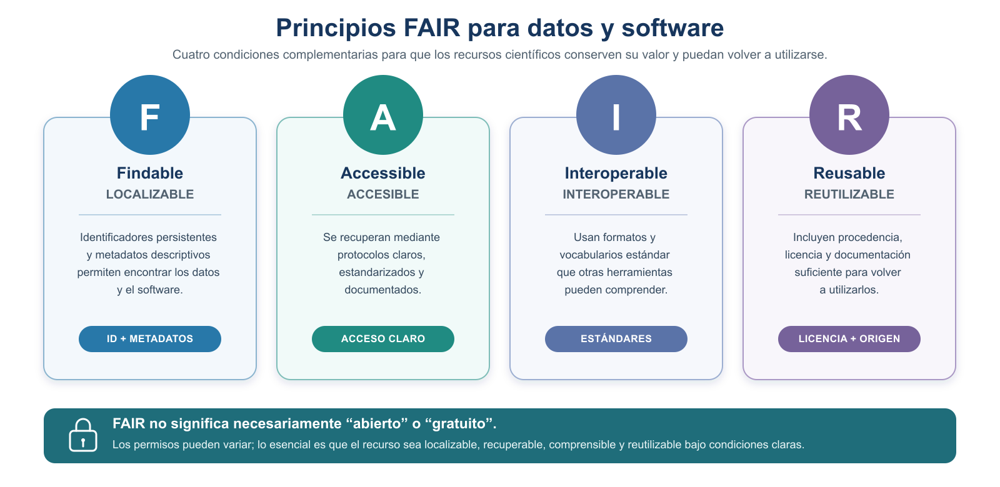
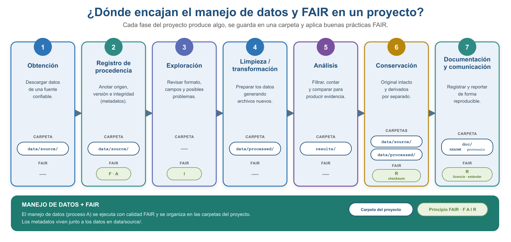
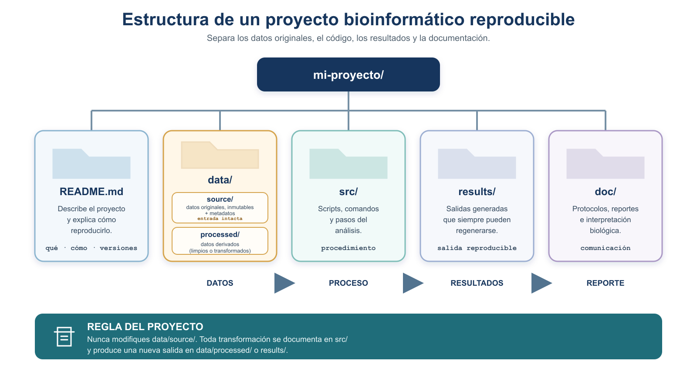
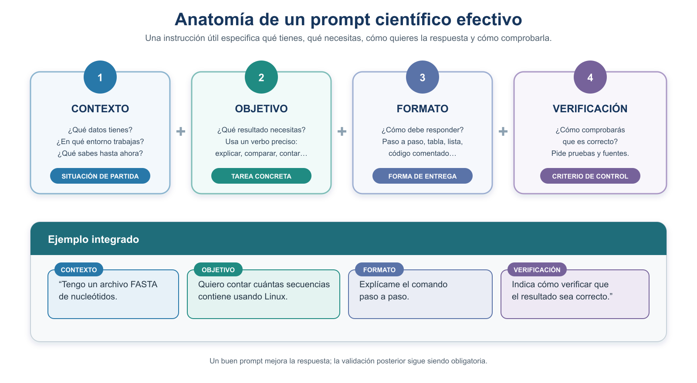
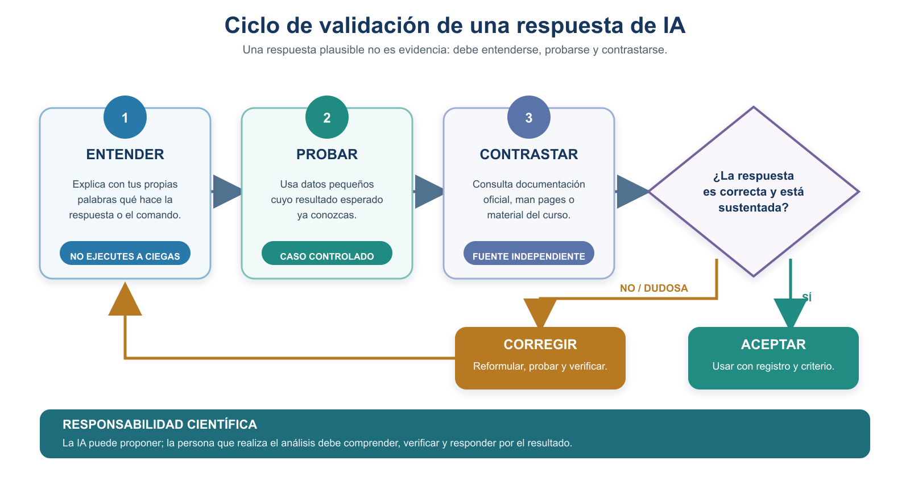

S2 — Organizar: buenas prácticas FAIR e introducción al prompting científico
Este documento se lee antes de la sesión S2. Traes hecho el primer intento de la Práctica 1; en el taller se compara y se corrige; después entregas la Tarea 2. Los primeros intentos son formativos: se evalúa que llegues preparado y puedas explicar tus decisiones.
Segundo módulo de la Unidad 1. En S1 escribiste una pregunta, una estrategia y un protocolo. Hoy te ocupas de dónde viven los datos que vas a usar y cómo se describen, porque un análisis impecable sobre datos sin procedencia no es reproducible. Y abres el eje que recorre el curso entero: usar la IA sin delegarle el criterio.
Ficha del módulo
| Elemento | Descripción |
|---|---|
| Sesión | S2 (2 h) |
| Tema | Organizar: buenas prácticas FAIR e introducción al prompting científico |
| Competencias | A — Trabajo reproducible y comunicación científica; G — Uso responsable de IA |
| Resultado (plan) | Aplica principios FAIR y crea metadatos; usa la IA con criterios de validación |
| Consulta previa (plan) | Lectura: A scientist’s nightmare (software / carelessness) |
| Lectura base | Este módulo + la lectura previa |
| Caso conductor | Dejar el proyecto organizado, con sus datos descritos y su procedencia documentada |
| Evidencia | Tarea 2: estructura del proyecto + metadatos con diccionario de variables + entradas de la bitácora de IA |
| Ajuste integrado | [Nuevo] inicio del eje de IA en espiral |
La estructura que construyas hoy en tu equipo es la misma que levantarás sobre el servidor en S4. Guárdala tal cual: en U2 se traslada, no se rehace.
Relación con lo anterior
S1 te dejó un protocolo con una pregunta y una estrategia, y una carpeta doc/. Faltan dos cosas para que ese trabajo sea reproducible por otra persona: que los datos estén descritos —de dónde vienen, qué significa cada variable, qué no se sabe de ellos— y que el proyecto esté organizado de forma que cualquiera encuentre lo que busca sin preguntarte.
Esa es la deuda que S2 salda, y por eso la Tarea 2 no es un ejercicio aparte: es lo que le faltaba a la Tarea 1.
Resultados de aprendizaje
Al terminar S2, el estudiante es capaz de:
- Explicar los principios FAIR y distinguirlos de «datos abiertos».
- Enumerar acciones concretas que contribuyen a cada principio, y reconocer cuáles están a su alcance hoy.
- Elaborar la ficha de metadatos de un conjunto de datos, con diccionario de variables, y declarar honestamente lo que no está documentado.
- Organizar un proyecto reproducible con la estructura del curso, y justificar qué va en cada directorio.
- Explicar qué es un modelo de lenguaje y qué son las alucinaciones.
- Formular un prompt científico y validar su respuesta de forma independiente.
- Registrar el uso de IA en
bitacora-ia.mdsegún la política del curso.
Antes de empezar: lista de verificación
Ruta de S2
| Momento | Qué hacer | Tiempo estimado |
|---|---|---|
| Antes de clase | Leer §1–§4 y hacer el primer intento de la Práctica 1 | 50 + 40 min |
| Taller (1.ª hora) | FAIR, metadatos y organización del proyecto; corregir el primer intento | 60 min |
| Taller (2.ª hora) | Cápsula de IA: prompt científico, alucinaciones y validación (Práctica 2) | 60 min |
| Después del taller | Cerrar la Tarea 2 y las entradas de la bitácora | 90 min |
El quiz, el reto final y el semáforo de salida están en la portada de la Unidad 1, porque cubren S1 y S2 a la vez.
1. Los principios FAIR para el manejo de datos
El manejo de datos (proceso A) se orienta con un conjunto de principios guía: los principios FAIR (Wilkinson et al., 2016). No son un estándar ni una especificación técnica, sino recomendaciones para mejorar la localización, accesibilidad, interoperabilidad y reutilización de los datos y otros objetos digitales de investigación, tanto por personas como por máquinas. FAIR es un acrónimo:
- Findable (localizable): tiene identificadores y metadatos que permiten encontrarlo.
- Accessible (accesible): se recupera mediante un protocolo claro.
- Interoperable (interoperable): usa formatos y vocabularios estándar.
- Reusable (reutilizable): está bien documentado y con licencia clara.

Figura 4. Los principios FAIR para datos y software. Son cuatro condiciones complementarias para que un recurso científico conserve su valor y pueda reutilizarse; FAIR no significa necesariamente “abierto” o “gratuito”.
FAIR no se logra al final, al publicar: empieza en la obtención. Si no registras la procedencia y los metadatos cuando obtienes el dato (fase A2), esa información se pierde y ya no podrás hacerlo FAIR después. Además, no se cumple automáticamente por guardar un archivo de metadatos en una carpeta local: requiere varias acciones complementarias a lo largo del proyecto.
FAIR no equivale a “datos abiertos o gratuitos”: significa que, con los permisos que correspondan, el dato es localizable, accesible, interoperable y reutilizable.
Existe una versión de estos principios para software, los FAIR4RS (FAIR for Research Software; Barker et al., 2022): el software requiere considerar además su versión, su evolución, su ejecutabilidad y sus dependencias. El control de versiones (Git) se aborda en Programación Aplicada a la Bioinformática I.
La siguiente tabla muestra, para cada principio, qué fases y acciones del proceso A contribuyen a lograrlo:
| Principio FAIR | Fases del proceso A que contribuyen | Acciones que contribuyen a este principio |
|---|---|---|
| Findable | A1 Obtención · A2 Registro de procedencia | Asignar un identificador y registrar metadatos del archivo en data/source/ |
| Accessible | A2 Registro de procedencia | Documentar la URL y el procedimiento de obtención en los metadatos |
| Interoperable | A3 Exploración · A7 Documentación | Usar y documentar formatos estándar (FASTA, GFF, CSV) |
| Reusable | A6 Conservación · A7 Documentación | Conservar el original con su checksum, y documentar licencia y diccionario de variables |
Los principios FAIR se van logrando con la forma en que ejecutas las fases de registro de procedencia, conservación y documentación del proceso A; no son un paso extra ni se resuelven con un solo archivo. La ficha de metadatos que contribuye a ellos la construyes en la sección 4, y la estructura de carpetas donde vive, en la sección 6.

Figura 5. Dónde encajan el manejo de datos y FAIR en un proyecto: cada fase del proceso A produce algo, se guarda en una carpeta y aplica los principios FAIR que le corresponden. Los metadatos viven junto a los datos en data/source/.
2. La ficha de cada dato: los metadatos
El protocolo documenta el análisis. Cada dato, además, lleva su propia ficha: un archivo de metadatos que lo describe para poder interpretarlo y reutilizarlo (es la forma concreta de aplicar los principios FAIR vistos en la sección 2). Esta ficha alimenta la sección Datos del protocolo y se guarda junto al dato original en data/source/ (sección 6).
Un metadato describe un dato para poder interpretarlo correctamente. El siguiente bloque es una plantilla; los campos marcados (mínimo U1) son los que llenas en esta unidad, el resto se completa cuando descargues datos reales en unidades posteriores:
# Metadatos — <nombre_del_archivo>
- Nombre original del archivo: (mínimo U1)
- Descripción del contenido: (mínimo U1)
- Organismo: (mínimo U1)
- Base de datos de origen: (mínimo U1)
- URL: (mínimo U1)
- Identificador o accesión: (mínimo U1)
- Versión o release:
- Fecha de acceso: (mínimo U1)
- Formato: (mínimo U1)
- Tamaño:
- Checksum (integridad):
- Licencia o condiciones de uso:
- Responsable (quién lo obtuvo): (mínimo U1)
- Procedimiento de obtención:
- Notas de procedencia:
- Transformaciones realizadas: (si aplica)Cuando los datos vienen en forma de tabla (columnas), los metadatos deben incluir un diccionario de variables: qué significa cada columna, su tipo y sus unidades. Puedes ver un ejemplo que modela la conducta correcta (documenta solo lo comprobable y marca lo demás como “no documentado”) en ejemplos/metadatos_pacientes.md.
El checksum es una “huella digital” del archivo (un código que cambia si el archivo se altera). Sirve para verificar que una descarga llegó íntegra. Aprenderás a calcularlo en la Unidad 3; por ahora basta con que sepas para qué sirve y reserves el campo.
Además de los datos, el software también se documenta. En esta unidad solo lo introducimos: en tu README.md reserva una sección mínima de entorno computacional (herramienta, versión, sistema operativo, fuente, fecha y condiciones de uso) que irás completando en unidades posteriores. No anotes versiones de herramientas que todavía no has usado. La razón de fondo la dan los principios FAIR4RS (sección 2): el software exige considerar versión, evolución, ejecutabilidad y dependencias.
3. Organización reproducible del proyecto y datos fuente
Un proyecto ordenado separa lo que entra (datos originales) de lo que se produce (datos transformados y resultados, siempre regenerables). Sigue esta estructura (Buffalo, 2015, Cap. 2):
proyecto/
├── README.md # cuaderno del proyecto: qué es y cómo reproducirlo
├── data/ # todos los datos van aquí, separados del código
│ ├── source/ # datos ORIGINALES, inmutables + sus metadatos
│ └── processed/ # datos derivados (limpios o transformados)
├── src/ # scripts y comandos
├── results/ # resultados y evidencia (regenerables)
└── doc/ # documentación y reportes (p. ej. protocolo.md)Se agrupan todos los datos bajo data/ y se separan los originales (data/source/) de los derivados (data/processed/). Esta es la convención recomendada para proyectos de biología computacional (Noble, 2009): mantiene los datos juntos, los separa del código y los resultados, y escala bien cuando aparecen datos externos o intermedios.

Figura 7. Organización de un proyecto reproducible: separa los datos (originales en data/source/ y derivados en data/processed/) del código, los resultados y la documentación (Noble, 2009).
Reglas para los datos fuente (data/source/), enunciadas con precisión:
- Los archivos originales pueden leerse y copiarse.
- No deben editarse, sobrescribirse ni reemplazarse.
- Deben conservar su nombre original y su checksum.
- Cualquier transformación debe producir archivos nuevos.
- Los datos derivados se guardan fuera de
data/source/(endata/processed/). - Los resultados deben poder regenerarse a partir de los datos fuente.
La idea no es “no tocar los datos” en abstracto, sino que el punto de partida siempre permanezca recuperable. Si transformas un archivo, la salida es un archivo nuevo; el original queda idéntico, con su nombre y checksum.
En esta unidad no necesitas crear esta estructura con comandos de Unix. Eso se trabaja formalmente en la Unidad 2. Para tu primer intento puedes dibujar el árbol, escribirlo como bloque de texto o usar la carpeta modelo que proporcione la docente.
Práctica 1 — Organización del proyecto y metadatos (antes de clase, primer intento)
Antes de clase (primer intento). Trabajarás con el conjunto de datos pequeño del curso ejemplos/pacientes.md, un conjunto de datos sintético (creado para el ejercicio, no proviene de personas reales) con tres registros y fines exclusivamente educativos.
Dibuja con Mermaid o escribe en un bloque de código Markdown la estructura de directorios de la sección 6 para un proyecto que utilice estos datos. No necesitas comandos de Unix. Incluye al menos
README.md,data/source/,data/processed/,src/,results/ydoc/, y ubicapacientes.mddentro de esa estructura.Redacta un borrador de metadatos llamado
pacientes-metadatos.mdy colócalo junto al archivo de datos. Incluye los campos mínimo U1 de la sección 2 y un diccionario para las variablesid,peso,altura,sexo,edadydx.Examina el contenido del archivo y distingue entre lo que realmente puedes comprobar y lo que falta por documentar. En particular, revisa:
- Si la extensión
.mdcoincide con el formato interno del archivo. - En qué unidades están expresados
pesoyaltura. - Qué valores acepta la variable
sexo. - Qué significan los códigos de la variable
dx. - Cuál es el origen, fecha, responsable y licencia de los datos.
No inventes la información faltante: regístrala explícitamente como “no documentada” o “pendiente de confirmar”.
- Si la extensión
Durante el taller. Compararemos las estructuras propuestas, discutiremos dónde deben guardarse los datos originales, los archivos derivados y los metadatos, y revisaremos los diccionarios de variables. Analizaremos por qué una extensión de archivo no siempre permite conocer su formato real y cómo los metadatos incompletos limitan las preguntas que pueden responderse.
Después del taller (entrega final). Entrega el árbol corregido del proyecto y pacientes-metadatos.md con los campos mínimos y el diccionario de variables. Conserva pacientes.md sin modificaciones dentro de data/source/ y señala claramente cualquier información que continúe pendiente de confirmar.
4. Uso responsable de la Inteligencia Artificial
Esta sección es el inicio del eje de IA en espiral del curso: aquí sentamos las bases; se refuerza con tareas reales y se cierra con una discusión crítica al final del semestre.
Los asistentes de IA generativa ya son parte del trabajo cotidiano. En este curso los usamos como apoyo, con criterios claros para que fortalezcan tu razonamiento en lugar de sustituirlo.
RECURSO DEL CURSO — ProfeUnix Bioinfo: Puedes acceder al asistente ProfeUnix Bioinfo para consultas y revisiones sobre Unix aplicado a bioinformática. Algunas actividades te pedirán utilizarlo de manera explícita; en las demás es un recurso opcional. No opera tu terminal ni garantiza que sus respuestas sean correctas: debes comprender, probar y validar cada propuesta, y registrar su uso en
bitacora-ia.md. Si tu cuenta no permite abrir el GPT, usa otro asistente autorizado y anota cuál utilizaste.
4.1 Qué es un modelo de lenguaje y qué son las alucinaciones
Un modelo de lenguaje grande (LLM) predice la continuación más probable de lo que escribes; no comprende ni verifica, genera texto plausible. Por eso puede sonar seguro y estar equivocado: a esas respuestas falsas pero verosímiles —un comando que no existe, una opción inventada, una cita inexistente— se les llama alucinaciones.
4.2 Qué es un prompt
Un prompt es el texto que le das a un asistente de IA para pedirle una tarea: la instrucción, la pregunta o el encargo con el que orientas su respuesta. No es un comando de la terminal ni un programa que se ejecuta solo: es lenguaje natural (a veces mezclado con datos de ejemplo) que el modelo usa como punto de partida para generar texto.
La calidad de lo que obtienes depende en buena medida de lo que pediste. Por eso, en este curso no bastará con “preguntarle algo”: aprenderás a formular un prompt científico —una instrucción completa y verificable— y a contrastar siempre la respuesta.
4.3 Estructura de un prompt científico
Un buen prompt científico incluye:
- Contexto (qué estás haciendo).
- Pregunta u objetivo (qué quieres lograr).
- Tipo y formato de los datos (p. ej. un GFF tabular).
- Ambiente de ejecución (Linux, línea de comandos).
- Restricciones (herramientas permitidas, sin instalar nada).
- Resultado esperado (qué forma tendría la respuesta correcta).
- Supuestos que estás haciendo.
- Solicitud de explicación (que te explique cada paso).
- Fuentes o documentación que deberían consultarse.
- Plan de verificación (cómo comprobarás la respuesta).

Figura 8. Los cuatro bloques esenciales de un prompt científico —contexto, objetivo, formato y verificación— con un ejemplo integrado. La lista de arriba los desarrolla en detalle.
Un mejor prompt no sustituye la validación independiente. Aunque la respuesta parezca perfecta, debes comprobarla tú.
4.4 Validación independiente
Tras recibir una respuesta de IA: (1) entiéndela —si no puedes explicar qué hace, no la uses—; (2) pruébala en datos pequeños de resultado conocido; (3) contrástala con la documentación oficial o el material del curso.

Figura 9. Antes de usar una respuesta de IA hay que entenderla, probarla y contrastarla. Si no es confiable, se corrige y se vuelve a validar; la responsabilidad del resultado es siempre de quien realiza el análisis.
4.5 Actividad: detectar una respuesta de IA defectuosa
Un estudiante preguntó a una IA cómo contar los genes de un archivo GFF y recibió esta respuesta (que contiene errores deliberados):
“Usa el comando
countgenes archivo.gff, que devuelve el número exacto de genes. Está descrito en Smith et al. (2019), Journal of Genome Counting.”
Esta respuesta es sospechosa: menciona un comando que no existe (countgenes) y una referencia probablemente inventada. Tu tarea (se detalla en la Práctica 4) será identificar el error, explicar por qué es sospechoso, contrastarlo con una fuente confiable, y concluir si la respuesta era totalmente, parcialmente o nada confiable.
4.6 Política de uso de IA del curso
- Usos permitidos: entender conceptos, explicar comandos, sugerir estrategias, revisar redacción.
- Usos no permitidos: entregar como propio texto o código generado sin comprender ni validar; usar IA donde el examen o la actividad lo prohíban explícitamente.
- En tareas: permitida con declaración y bitácora.
- En el proyecto: permitida como apoyo; el razonamiento y las conclusiones deben ser tuyos.
- En exámenes prácticos: solo si se autoriza expresamente.
- Datos sensibles: no compartas datos privados o no públicos en un asistente.
- Responsabilidad: el resultado es tuyo; respondes por él.
- Declaración obligatoria: todo uso de IA se declara en la bitácora.
4.7 Bitácora de IA
Registra, por cada uso: fecha, actividad, herramienta y modelo (si se conoce), consulta o prompt, respuesta relevante, error o limitación detectada, fuente usada para validar, prueba realizada, corrección efectuada y conclusión sobre la confiabilidad.
## 2026-08-22 — Tarea 2
- Actividad: entender un campo del formato GFF.
- Herramienta/modelo: (nombre y versión, si se conoce).
- Prompt: "¿Qué representa la columna 3 de un archivo GFF? ..."
- Respuesta relevante: "la columna 3 es el tipo de feature".
- Error/limitación: ninguno detectado.
- Fuente de validación: documentación del formato GFF3.
- Prueba: revisé 3 renglones del archivo y coincidió.
- Corrección: no requerida.
- Conclusión de confiabilidad: respuesta confiable.Práctica 2 — Formular y validar el uso de IA (durante el taller y entrega posterior)
Regla — primero a mano, después con IA. En las Prácticas 2 y 3 elaboraste los metadatos y la estrategia sin ayuda de un asistente. Ahora usarás IA para generar propuestas alternativas y compararlas con tu trabajo manual. Tu trabajo previo es la línea base de la comparación —no una verdad absoluta, porque también puede contener errores—. La referencia final se construye con el archivo original, los metadatos disponibles, la documentación autorizada, pruebas controladas y la retroalimentación docente. La validación debe ser independiente tanto de la IA como de tu primer intento.
Herramientas. Puedes utilizar ChatGPT, Claude o los asistentes del curso. Formula tus prompts siguiendo la estructura de la sección 7.2 y declara todo uso de IA en bitacora-ia.md. Recuerda que el asistente no conoce la procedencia, las unidades ni el significado de las variables a menos que se los proporciones. No aceptes como hechos las suposiciones que genere.
Antes de clase (primer intento). Realiza las siguientes dos actividades y regístralas en bitacora-ia.md.
a) Metadatos con IA
En la Práctica 2 redactaste manualmente los metadatos y el diccionario de variables de pacientes.md. Ahora formula un prompt para que un asistente genere su propia propuesta.
Puedes utilizar y adaptar el siguiente prompt:
Tengo un archivo llamado
pacientes.mdcuyo contenido está separado por comas. Sus columnas sonid,peso,altura,sexo,edadydx. Necesito una ficha de metadatos en Markdown con origen, formato, fecha de acceso, responsable, licencia y un diccionario de variables que incluya descripción, tipo de dato, unidades y valores permitidos. No inventes información. Marca como “no documentado” o “pendiente de confirmar” todo lo que no pueda determinarse a partir de la información proporcionada. Explica qué información adicional sería necesario conseguir.
Compara la respuesta con pacientes-metadatos.md y revisa si la IA:
- Identificó correctamente el formato interno del archivo y distinguió el formato de la extensión
.md. - Supuso o inventó las unidades de
pesoyaltura. - Inventó el significado de los códigos de la variable
dx. - Supuso una fuente, fecha, responsable o licencia.
- Identificó correctamente los posibles tipos de datos.
- Distinguió entre información conocida, inferida y faltante.
- Indicó qué datos adicionales sería necesario documentar.
Registra en bitacora-ia.md:
- El prompt completo.
- La respuesta del asistente.
- Las coincidencias con tu ficha manual.
- Las omisiones, suposiciones o invenciones detectadas.
- Las correcciones que realizaste.
- Tu conclusión sobre la confiabilidad de la respuesta.
b) Estrategia con IA
En la Práctica 3 construiste manualmente una estrategia para responder la pregunta:
¿Los datos de
pacientes.mdson suficientes para evaluar si el índice de masa corporal está relacionado con el diagnóstico registrado endx?
Ahora formula un segundo prompt para que el asistente descomponga la pregunta. Puedes utilizar y adaptar el siguiente:
Quiero evaluar si los datos de
pacientes.mdson suficientes para investigar una posible relación entre el índice de masa corporal y el diagnóstico registrado endx. Ayúdame a descomponer la pregunta en subpreguntas y, para cada una, indica qué evidencia necesitaría, en qué variables estaría, qué operación conceptual realizaría y cómo validaría el resultado. No me des comandos. No supongas las unidades depesoyalturani el significado dedx. Considera que el archivo contiene únicamente tres pacientes y que cada código de diagnóstico aparece una sola vez. Señala las limitaciones y los datos adicionales necesarios.
Compara la respuesta con tu tabla manual y revisa si la IA:
- Comenzó por la pregunta y no por una herramienta o comando.
- Propuso subpreguntas relevantes.
- Relacionó cada subpregunta con evidencia, datos, operaciones y validación.
- Diferenció una operación conceptual de un comando.
- Reconoció que las unidades deben confirmarse antes de calcular el IMC.
- Evitó inventar el significado de
dx. - Reconoció que solo existe un paciente por diagnóstico.
- Evitó afirmar una asociación que los datos no permiten demostrar.
- Distinguió entre resultados descriptivos e interpretaciones médicas.
- Indicó qué datos, controles o metadatos adicionales serían necesarios.
Registra en bitacora-ia.md:
- El prompt completo.
- La respuesta del asistente.
- Las coincidencias con tu estrategia manual.
- Las subpreguntas útiles que no habías considerado.
- Las propuestas irrelevantes, incorrectas o no sustentadas.
- Las correcciones que realizaste.
- Tu conclusión sobre la confiabilidad de la respuesta.
Reflexión para el taller
Después de completar las dos actividades, responde en bitacora-ia.md:
- ¿En qué mejoró la IA tu ficha de metadatos o tu estrategia?
- ¿Qué información omitió, supuso o inventó?
- ¿Qué error habrías aceptado si no hubieras realizado primero el trabajo manual?
- ¿Qué partes del análisis no conviene delegar?
- ¿Qué concepto comprendiste mejor al comparar ambos enfoques?
- ¿La IA fue más útil para generar, revisar, explicar o detectar alternativas? Justifica tu respuesta.
Durante el taller. Compararemos los prompts, las respuestas y los criterios utilizados para validarlas. Identificaremos las suposiciones e invenciones más frecuentes y discutiremos por qué una respuesta clara y bien redactada puede ser científicamente incorrecta. También compararemos qué partes del trabajo mejoraron con la IA y cuáles requirieron necesariamente el conocimiento y juicio del estudiante.
Después del taller (entrega final). Entrega las dos entradas corregidas de bitacora-ia.md. Cada entrada debe incluir:
- El objetivo de la consulta.
- El prompt completo.
- La respuesta obtenida.
- La comparación con el trabajo manual.
- Los errores, omisiones, suposiciones o limitaciones detectados.
- El procedimiento utilizado para validar la respuesta.
- Las correcciones realizadas.
- Una conclusión que clasifique la respuesta como confiable, parcialmente confiable o no confiable, con una justificación.
- La reflexión final sobre qué aportó la IA y qué no debe delegarse.
5. Rúbricas
Cómo se evalúa cada momento. El primer intento tiene valor formativo: da puntos por preparación, no por acierto. La participación en clase también es formativa. Las Tareas 1 y 2 (entrega posterior al taller) llevan la calificación principal. Cada criterio se evalúa en tres niveles: Logrado, Parcialmente logrado y Aún no logrado.
Recuerda el alcance de U1: el protocolo se construye hasta la estrategia; la ejecución de comandos, los resultados y la validación ejecutada llegan en unidades posteriores. Aquí la validación y la conclusión se evalúan como diseño anticipado, no como ejecución.
5.1 Primer intento (formativa · puntos por preparación)
| Criterio | Logrado | Parcialmente logrado | Aún no logrado |
|---|---|---|---|
| Evidencia de lectura | Aplica ideas de las secciones y de Buffalo Cap. 1 | Menciona la lectura sin aplicarla | Sin evidencia de lectura |
| Esfuerzo auténtico | Intenta todas las prácticas asignadas | Intenta algunas | No presenta intento |
| Identificación de dudas | Registra ≥1 duda concreta y accionable | Duda vaga | No registra dudas |
| Registro de dificultades y errores | Señala la parte más difícil y los errores encontrados | Menciona dificultad sin detalle | No registra |
Los errores razonables no se penalizan: este momento premia preparar y llegar con preguntas.
5.2 Participación en clase (formativa)
| Criterio | Logrado | Parcialmente logrado | Aún no logrado |
|---|---|---|---|
| Revisión del propio intento | Revisa y detecta sus errores | Revisa superficialmente | No revisa |
| Formulación de preguntas | Pregunta con precisión | Pregunta de forma vaga | No participa |
| Corrección argumentada | Corrige y explica por qué | Corrige sin justificar | No corrige |
| Comparación de estrategias | Compara con compañeros y aprende | Compara sin analizar | No compara |
5.3 Tarea 2 — organización + metadatos + bitácora de IA
| Criterio | Logrado | Parcialmente logrado | Aún no logrado |
|---|---|---|---|
| Estructura del proyecto | data/source, data/processed, src, results, doc; original intacto en data/source |
Estructura incompleta | Sin separación de datos |
| Metadatos y diccionario de variables | Campos mínimos + diccionario de pacientes.md |
Faltan campos o variables | Ausente |
| Reconocimiento de información no documentada | Marca “no documentado”/“pendiente” en lo no comprobable | Marca algunos; inventa otros | Inventa la información faltante |
| Bitácora de IA | Prompt, respuesta, comparación, validación y conclusión de confiabilidad | Entrada incompleta | Sin bitácora o sin validación |
| Validación de respuestas de IA | Detecta suposiciones/invenciones y las corrige con fuente | Detecta sin corregir | Acepta la IA sin validar |
Glosario
| Español | Inglés | Definición breve |
|---|---|---|
| Reproducibilidad | Reproducibility | Regenerar resultados con los mismos datos y procedimientos |
| Replicabilidad | Replicability | Evidencia compatible con datos o estudios independientes |
| Verificación | Verification | Comprobar que archivos, comandos y resultados funcionan como se espera |
| Validación | Validation | Demostrar que el procedimiento responde la pregunta |
| Robustez | Robustness | Que la conclusión no dependa de decisiones frágiles |
| Metadatos | Metadata | Datos que describen un dato |
| Checksum / suma de verificación | Checksum | Huella digital para comprobar integridad de un archivo |
| Procedencia | Provenance | Origen e historia de un dato |
| Feature (elemento) | Feature | Elemento anotado del genoma (gen, región, etc.) |
| Cadena / hebra | Strand | Hebra del ADN donde se ubica un feature (+ o -) |
Referencias
- Buffalo, V. (2015). Bioinformatics Data Skills: Reproducible and Robust Research with Open Source Tools. O’Reilly Media. — Cap. 1 (reproducibilidad, robustez, Regla de Oro) y Cap. 2 (organización de proyectos, documentación, Markdown). Disponible en
referencias/bioinformatics-data-skills.pdf. - Wilkinson, M. D., et al. (2016). The FAIR Guiding Principles for scientific data management and stewardship. Scientific Data, 3, 160018. doi:10.1038/sdata.2016.18.
- Miller, G. (2006). A Scientist’s Nightmare: Software Problem Leads to Five Retractions. Science, 314(5807), 1856–1857. doi:10.1126/science.314.5807.1856.
- Cyranoski, D. (2015, 18 de febrero). Haruko Obokata: the STAP cells controversy. The Guardian. https://www.theguardian.com/science/2015/feb/18/haruko-obokata-stap-cells-controversy-scientists-lie
- The Japan Times (2024, 9 de abril). 10 years since STAP. https://www.japantimes.co.jp/news/2024/04/09/japan/science-health/10-years-since-stap/
- Popper, K. (1959). The Logic of Scientific Discovery. Hutchinson & Co.
- Collado-Torres, L., Nellore, A., Kammers, K., Ellis, S. E., Taub, M. A., Hansen, K. D., Jaffe, A. E., Langmead, B., & Leek, J. T. (2017). Reproducible RNA-seq analysis using recount2. Nature Biotechnology, 35(4), 319–321. doi:10.1038/nbt.3838.
- Barker, M., Chue Hong, N. P., Katz, D. S., et al. (2022). Introducing the FAIR Principles for research software (FAIR4RS). Scientific Data, 9, 622. doi:10.1038/s41597-022-01710-x.
- Noble, W. S. (2009). A Quick Guide to Organizing Computational Biology Projects. PLoS Computational Biology, 5(7), e1000424. doi:10.1371/journal.pcbi.1000424. (organización de directorios:
data/,results/,src/,doc/). - GO-FAIR. FAIR Principles. https://www.go-fair.org/fair-principles/
- Markdown — página oficial (John Gruber). https://daringfireball.net/projects/markdown/
- Markdown Guide. https://www.markdownguide.org/
- StackEdit — editor de Markdown en línea. https://stackedit.io
- Mermaid — documentación oficial. https://mermaid.js.org/